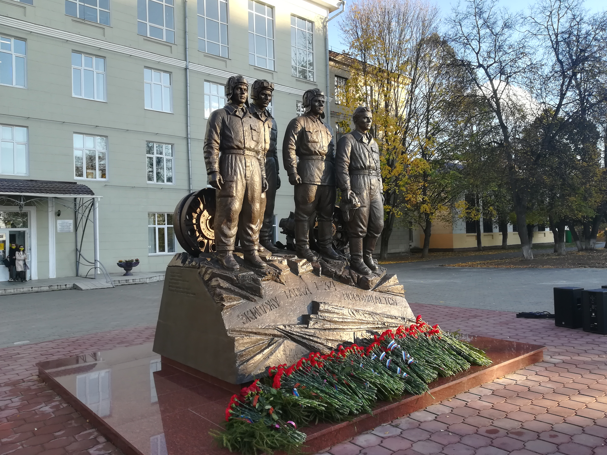
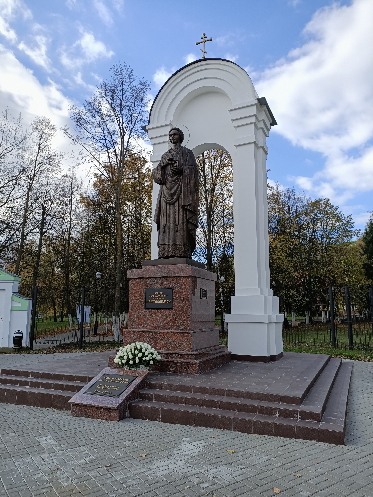
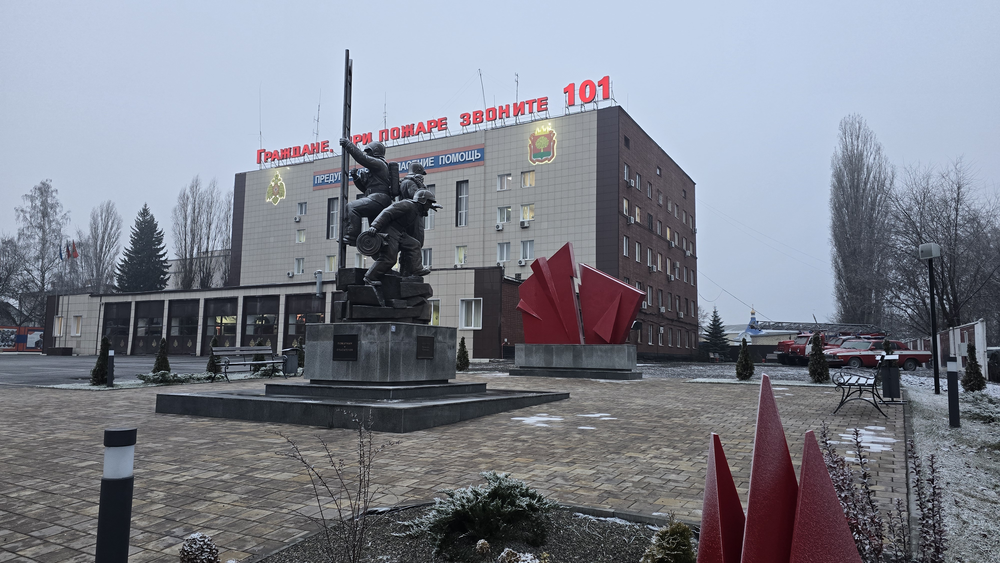
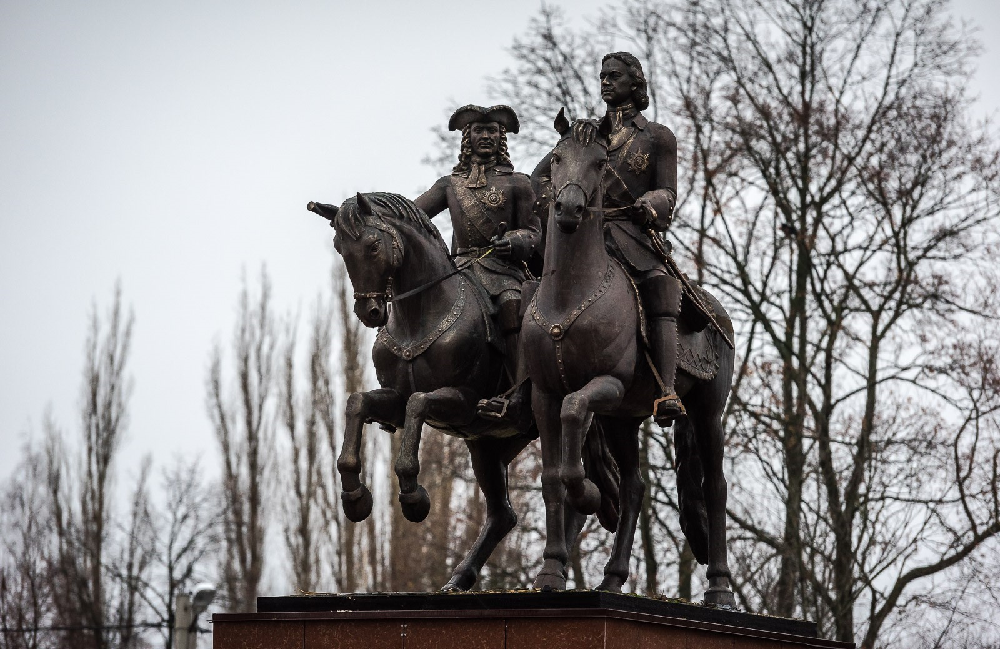
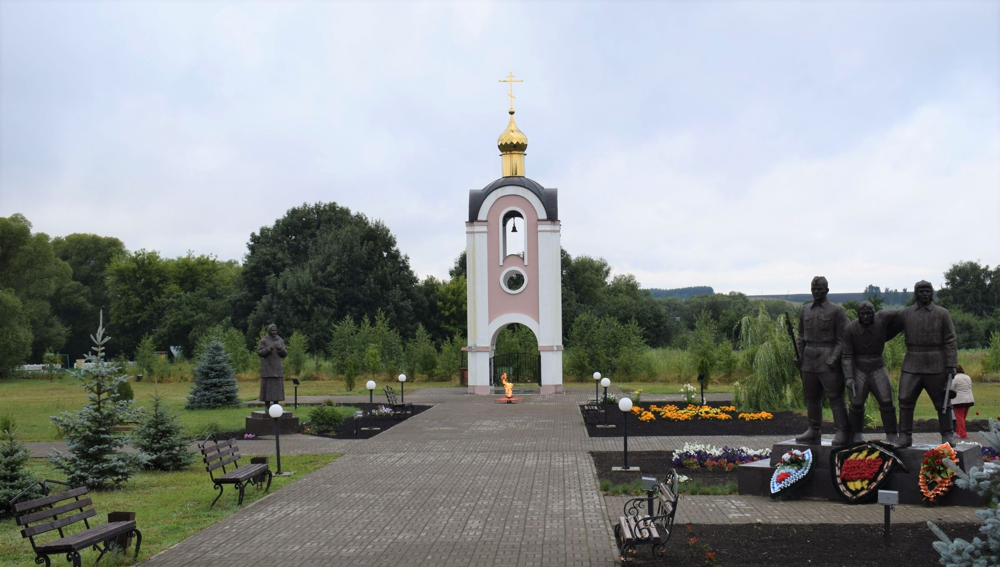

Сулин Андрей Анатольевич - художник, скульптр. Родился 14 июня 1960 года в городе Липецк. В 1984 году окончил Саратовское художественное училище. С 2000 года - член Союза художников России. В 1990-х мастер отдаёт предпочтение графике, станковой скульптуре малой формы, а с начала 2000-х годов особое место в творчестве начинает занимать монументальная скульптура. Круг сюжетов, наиболее характерных для Андрея Сулина, - жанровая композиция, историческая тема. Особое внимание скульптор в своих работах уделяет психологическому состоянию героев.
Участник всероссийских, региональных и областных выставок. Произведения хранятся в Липецком областном краеведческом музее, в частных собраниях России, Франции, странах СНГ. Монументальные памятники скульптора установлены в Липецке, в районах Липецкой области, Туле, а также в других городах России.